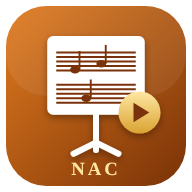
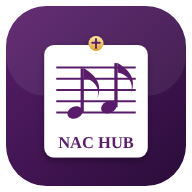
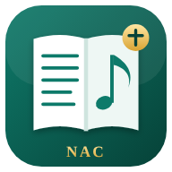
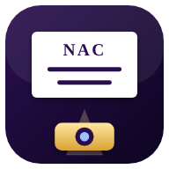

NAC Choir Rehearsal FREE
Free for choir members and conductors. Practise every song with moving scores and your own part louder, see the hymn books, plan rehearsals.

NAC Music Hub
Everything in one: programmes, booklets, score books, choir, concerts, projection, workshops, congregation and newsletters.
Needs an unlock code the first time it opens.

NAC Programme Studio
Service and concert programmes, hymn library, score and lyric booklets, flyers, tickets and slides.
Needs an unlock code the first time it opens.

NAC Service Projector
Hymn words, slides and videos on the projector for services and concerts.
Needs an unlock code the first time it opens.
On a phone or tablet
Best: open the app you want (for example NAC Choir Rehearsal → Open online) and tap Install on the blue bar at the top. Or tap Open online, wait a few seconds for it to open (Wi-Fi is best the first time, while the hymn books download in the background), then in Chrome's menu choose Add to Home screen or Install app. After that it opens from your home screen and works without internet. On iPhone use Safari → Share → Add to Home Screen.
Your data stays on your own device. Use Settings → Backup in the app to keep a copy or move it to another device.
On a Windows PC
Tap Windows PC, unzip the download, open the folder and double-click Install.bat. Already installed? Double-click Update NAC apps on your desktop.
The all-in-one installer is too big for this site – ask Kay Media GraphiX for it, or install the apps one by one.
Unlock codes
NAC Music Hub, Programme Studio and Service Projector are unlocked once with a code. NAC Choir Rehearsal is free.
New in version 1.9.5
- Install from the unlock screen – Music Hub, Programme Studio and Service Projector can now be installed on a phone straight from the unlock screen, before the code is entered.